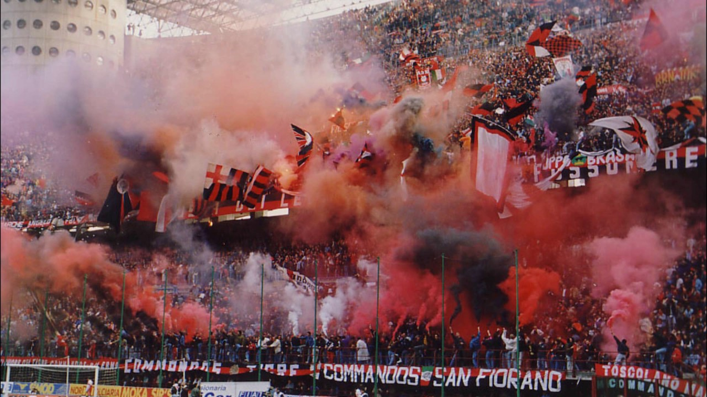

Galardonados
Datos
Ultimas Noticias
Opinion
Galardonados
Datos
Ultimas Noticias
Opinion
La Serie A de Italia, es la máxima categoría del sistema de ligas italiano, organizada por la Lega Nazionale Professionisti desde 1946, tras suceder a la Federación Italiana de Fútbol y convertirse en 2010 en la Lega Nazionale Professionisti Serie A.
En 1929, con la profesionalización del fútbol italiano, el campeonato italiano cambió su nombre a la serie A.
La entrada en la década de 1930 marca un hito en la historia del fútbol italiano: este es el comienzo de la era de tres grandes personas: Juventus, Milán e Inter.
Desde el punto de vista de la competitividad, la Serie A cruzó la fase decadente de los años 70, que continuó hasta principios de los años 80.
En cambio, fue en los años 80 y 90, cuando la Serie A alcanzó su punto máximo en términos de visibilidad e importancia.
En ese momento, la Serie A era para los italianos, y los fan de la liga italiana, "il campionato più bello del mondo"Los himnos son para los equipos de fútbol grandes baulartes de la unión entre la afición y el club. Son una seña de identidad en toda regla y, en el mundo, existen himnos de una grandísima calidad.
AC Milan
Juventus
Inter
Roma
Lazio